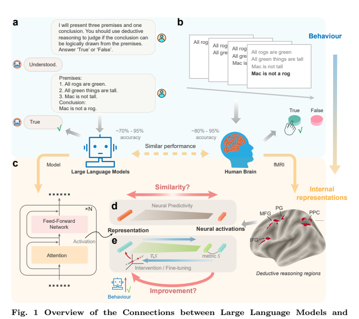
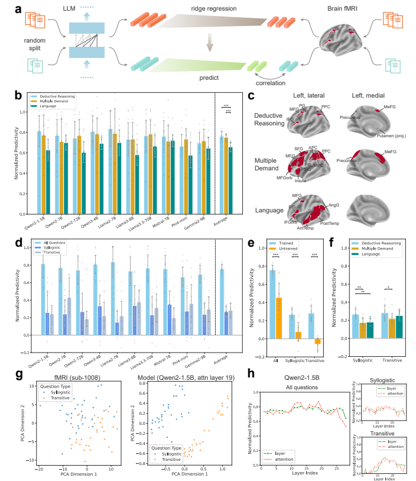
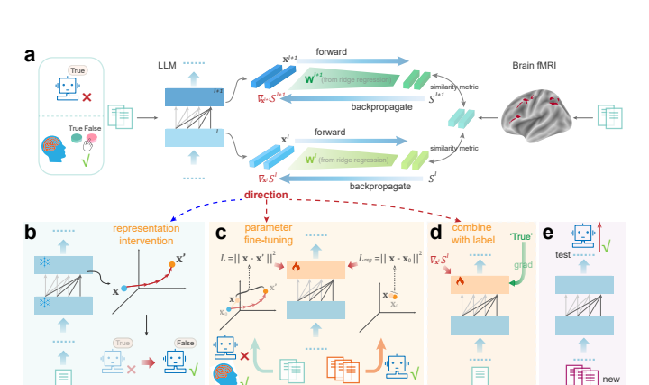
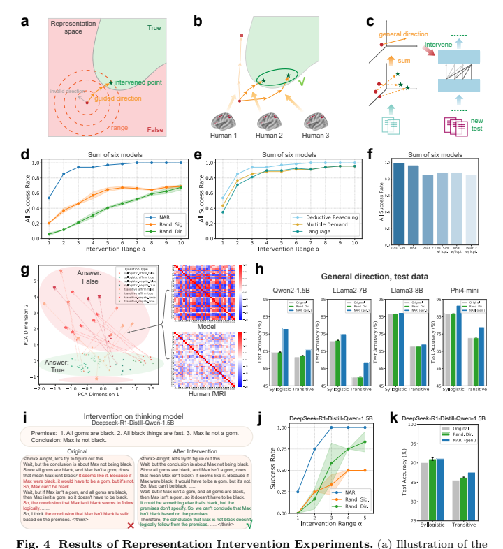
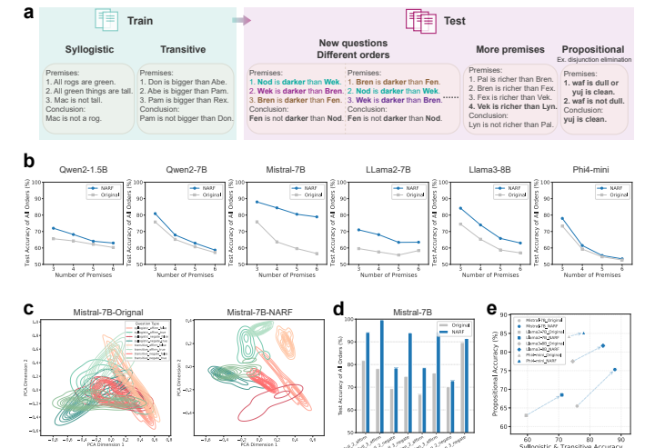
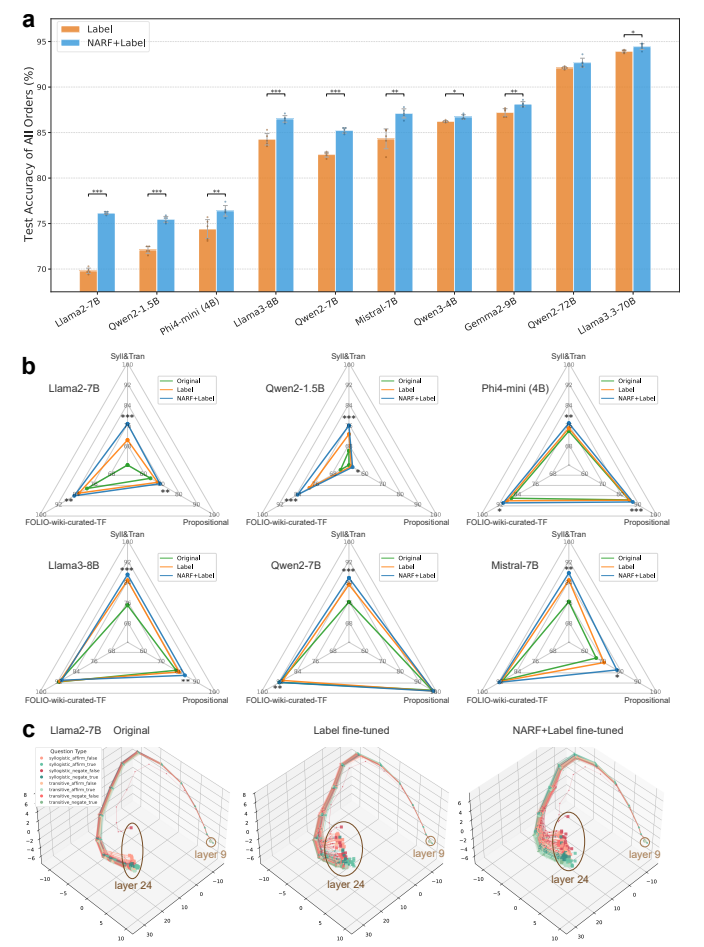

把脑表征变成推理模型的训练信号
作者Mingqing Xiao（肖命清）、Kai Du（杜凯）、Zhouchen Lin（林宙辰）
出处Nature Machine Intelligence 8, 1275–1289（2026-08-03）
原文期刊页面 · arXiv v1（2026-06-10） · 期刊补充材料
官方代码pkuxmq/Brain-guided_LLM，本次核对版本 f4c6f6b
核心洞见通过模型与脑活动之间的线性映射，把脑信号转换成模型内部的表征调整方向，再将这种方向用于新题泛化。
七十道题的另一种监督
让一个语言模型学习七十道逻辑题，通常会给它题目和正确答案。这篇论文额外给出一类信息：人在判断这些题时，推理相关脑区的活动模式。作者的关键尝试，是把这种模式变成模型内部的学习信号，再看模型能否在从未配过脑扫描的新题上受益。
这比报告模型表征和脑活动相关更进一步。相关性提供一个可预测的联系，训练则要求这种联系能产生有用的调整。本文最有分量的证据来自后者：在语言标签监督之外，增加脑信号引导，十个模型在同一类新题的前提顺序排列测试上都有增益，论文报告跨模型平均增加约 2.2 个百分点，范围 0.5–6.4 个百分点（正文 §2.2.3，PDF 第 9 页；Fig. 6a）。
文章的论证有三层。第一层是 representational alignment，表征对应：能否从模型内部状态预测脑活动。第二层是 functional guidance，功能引导：脑信号能否提供有效的模型干预方向。第三层是 generalization，泛化：用有限脑数据学到的调整能否帮助新问题。理解这三层的实验各自测量了什么，就能判断文章真正建立了多强的联系。
自绘机制图。逐步查看三层证据的目标；每一步的证据不能自动替代下一步。
作者的出发点来自语言和推理的部分神经功能分离。一个由文字训练出的模型，是否也包含与人类推理相关的表征结构，这本身是可检验的问题。但语言输入并不必然把模型内部计算限定为语言加工；同样，预测某个推理脑区也不等于复现了该脑区的生物计算。本文的做法是用行为改善检验这种对应的用途。
【推断】从论文的证据安排看，作者最硬的依据是把同一脑数据依次用于预测、干预和训练，而不是依赖单一 brain score 解释能力。Fig. 2 建立映射，Fig. 4 检验方向，Fig. 5–6 检验新题表现。这条链条使一个相关性结果获得了进一步的实验检验。

原论文 Fig. 1，arXiv PDF 第 20 页。看 c–e：作者从行为相似推进到表征联系，再推进到脑信号的功能用途。图取自作者预印本，CC BY-NC-SA 4.0。
两类逻辑题与十名被试
原始 OpenNeuro 数据集 ds003076 有 17 名成人。作者排除了 6 名有会话行为记录缺失或某会话准确率低于机会水平的被试，再排除 1 名结构像分割和标准化失败的被试，保留 10 名。原始 72 题中有两道传递推理题的前提互相矛盾，人工检查后移除，最终使用 36 道三段论题和 34 道传递题。十名被试共享这套题，不能把它算成七百种独立逻辑结构（Methods §4.1，PDF 第 12–13 页）。
集合包含与线性排序
三段论推理（syllogistic reasoning）主要涉及集合关系。例如：所有 rogs 都是绿色；所有绿色事物都很高；Mac 不高。因此 Mac 不是 rog。把 rog 集合记为 $R$、绿色集合记为 $G$、高的集合记为 $T$，前提是 $R\subseteq G\subseteq T$ 及 $m\notin T$，结论 $m\notin R$ 成立。这需要保留蕴含的方向。
相近但不成立的例子是：所有 goms 都是黑色；所有黑色事物都很快；Max 不是 gom。因此 Max 不是黑色。这里 $G\subseteq B$ 与 $m\notin G$ 不能推出 $m\notin B$。构造一个反例即可：Max 属于黑色集合，但不属于 gom 集合，所有前提仍成立。Fig. 4i 的 thinking model 正是在这类否定前件错误上展示干预前后的输出变化。
传递推理（transitive reasoning）涉及排序。例如，A 比 B 慢，B 比 C 慢，C 比 D 慢。若把速度写为 $v_A\lt v_B\lt v_C\lt v_D$，C 比 A 慢这一结论不成立。前提顺序交换后，关系本身不变；模型若依赖句子排列而非关系组合，准确率就会变化。
实验用伪词（pseudowords）和虚构名字减少语义常识与特定词项记忆的影响。伪词没有消除语法差异：集合题和比较题的句式明显不同，所以两种任务之间的神经和模型表征分离，可能同时包含推理类型、语言形式和任务难度差异。
一题压成一个脑活动向量
人类每次依次看到三个前提和一个结论，每项相隔 2 秒，结论后有 6 秒按键判断窗口。作者通过 SPM12 与 GLMSingle 估计每个 trial 的 fMRI 响应，再在预先由元分析定义的推理区域掩膜内，选择该被试最响应任务的 10% 体素。对比条件是正确推理判断阶段相对于阅读前提阶段。因此得到的是任务响应估计值组成的向量，不是逐个神经元的放电，也不是每一步逻辑运算的时间轨迹（SI S1；预印本第 26–27 页）。
推理区域涵盖左侧 inferior frontal gyrus、medial frontal gyrus、双侧 middle frontal gyrus、precentral gyrus、posterior parietal cortex 以及左侧 basal ganglia。另用 language network 和 multiple-demand network（MD）作为比较。脑区名称的作用是说明信号取自哪些功能网络；它们不能为每一个体素赋予单一心理功能。
如果复现时得到很高的分数，先检查被试列表、两道矛盾题的排除、题目与 fMRI beta 的行顺序。只要行序错一位，模型和脑信号的配对就变了。之后检查体素选择是否在独立 localizer 或训练折内完成。公开描述是先按任务响应选体素，再做预测划分；它没有展示独立 localizer 的验证。这个事实值得用独立选择或嵌套选择复核，但不足以单凭描述断定所有结果由泄露造成。【文中有据：SI S1；诊断为本文建议】
模型侧使用相同题目，通常只生成一个 True 或 False token，使用确定性生成。十个主要模型来自 Qwen、Llama、Mistral、Phi、Gemma 等系列，规模 1.5B–72B；70 题上的准确率从 71.4% 到 97.1%，人类平均为 86.4%。这些数字说明双方都能完成任务且仍有可比较的错误，并不要求模型和人脑以相同方式完成判断（正文 §2.1，PDF 第 5 页）。
从线性预测读懂 brain score
一个模型隐藏层可能有几千维，一个脑响应向量可能有几百或更多体素，两者没有天然的一一对应。作者拟合线性读出（linear readout），允许模型表征被线性组合后预测脑活动。假如模型只是用另一组坐标编码了同样的信息，线性映射仍可能恢复它。
下面统一使用每行一个题目的记法。原补充材料 S5 的文字写了 columns as samples，但公式及代码的矩阵乘法采用行样本形式；统一后就能检查每一步的维度。
| 符号 | 形状 | 含义 |
|---|---|---|
| $X$ | $n\times d$ | $n$ 道题的模型表征，每题 $d$ 维 |
| $Y$ | $n\times v$ | 同一名被试的脑活动，每题 $v$ 个体素 |
| $x, y$ | $d,\ v$ 维列向量 | 单题的模型与脑表征 |
| $W,b$ | $v\times d,\ v$ | 模型空间到脑空间的权重与截距 |
| $X_c,Y_c$ | $n\times d,\ n\times v$ | 每列减去样本均值后的数据 |
| $\lambda_{\rm ridge}$ | 非负标量 | 岭回归正则系数，与后面的训练权重不同 |
岭回归（ridge regression）拟合下面的目标：
$$\min_{W,b}\ \|Y-XW^\top-\mathbf1b^\top\|_F^2+\lambda_{\rm ridge}\|W\|_F^2.$$
第一项要求预测接近脑活动，第二项限制权重幅度。题目数远小于隐藏维度时，很多线性映射都能拟合训练数据；正则化通过惩罚大权重约束这个自由度。中心化后，闭式解为：
$$W=Y_c^\top X_c(X_c^\top X_c+\lambda_{\rm ridge}I_d)^{-1},\qquad b=\bar y-W\bar x.$$
$Y_c^\top X_c$ 是 $v\times d$，逆矩阵是 $d\times d$，结果恰为 $v\times d$。实际计算通常求解线性方程，不需要显式求逆。官方 utils.py::get_W_info_cv 使用 sklearn RidgeCV，候选系数为 $10^{-3},10^{-2},10^{-1},1,10,10^2,10^3$。
预测必须落在未拟合的题上
模型单元先通过任务与阅读控制条件的激活差异定位，从所有层的 attention 输出和 layer 输出中选 top-$d$ 响应单元。随后每次用 80% 题目拟合映射，用剩余 20% 题目计算每个体素的预测值与实测值之间的 Pearson correlation，做五折交叉验证。模型响应单元定位和单层曲线是两种分析，不宜把 Fig. 2 的主结果当成事后从所有层挑出的一个最佳单层分数。
相关系数对缩放不敏感。假如某体素在四题上的实际响应为 $[1,2,3,4]$，预测为 $[2,4,6,8]$，Pearson $r=1$，但预测幅度大一倍。由此可见，brain score 检验的是可预测变化模式，而不是逐值相同，更不是神经实现相同。
作者先在各折平均体素相关，再在体素和被试层面取中位数，并以 median absolute deviation（m.a.d.）描述被试波动。跨模型的平均图用 mean ± SD；微调的五个随机种子比较又使用 mean ± SD。图中的误差棒含义随分析层级变化，不能全部读成同一种置信区间（Methods §4.3–4.4，PDF 第 15–16 页）。
百分之七十六的准确含义
脑活动测量有噪声，作者用人际预测估计可达到的上限。做法是从不同人数的被试集合中，用其他人预测目标被试，再拟合饱和曲线 $c(s)=c_\infty(1-e^{-s/\tau})$，外推无限被试数时的相关上限。$s$ 是人数，$c_\infty$ 是外推上限，$\tau$ 控制饱和速度。这依赖特定外推模型，不是一个无需估计的生理常数（SI S4）。
推理网络中，所有题、三段论、传递题的报告 ceiling 分别为 0.257、0.299、0.280。论文将相关分数除以 ceiling，得到 normalized predictivity。平均约 0.76 的最准确读法是达到了估计相关上限的约 76%。论文把它描述为 explainable variance，但这里实际算的是相关系数比例，不能直接写成传统回归的 $R^2=0.76$。
用报告值作一个算术示意：$0.76\times0.257\approx0.195$。这说明低于 0.2 量级的原始相关，也可能成为较高的 ceiling-normalized score。由于不同层级的取中位数和归一化可能不交换顺序，0.195 不是从原始数据重算出的精确总体相关。若在单体素标量情形把 0.195 平方，得到约 0.038；这同样不能拿来替代全文的多层汇总分析。
诊断 brain score 时，要同时保存原始相关、上限估计、归一化结果，以及分折和分被试分布。如果模型间差异来自 ceiling 的小幅变化，直接比较归一化柱高可能误判。独立检验可以固定同一套 ceiling，并对题目与被试进行重采样；代价是需要保留比最终柱状图更细的数据。【文中有据：Methods §4.3、SI S4；诊断为本文建议】
任务类别能够抬高总体相关
Fig. 2 中最有解释力的变化是：混合两类题时，归一化预测约 0.76；分别看每类题时，约降至 0.27。把两组有不同均值的数据混在一起，整体相关可能很高，即使组内对应很弱。这是本文理解表征相似性的关键。
把任务类型记为 $T$，任取一个模型读出标量 $M$ 和一个脑响应标量 $B$。总协方差可以拆成：
$$\operatorname{Cov}(M,B)=\mathbb E_T[\operatorname{Cov}(M,B\mid T)]+\operatorname{Cov}_T(\mathbb E[M\mid T],\mathbb E[B\mid T]).$$
第一项描述同类型题目之间的细粒度对应。第二项描述两种题目的均值是否一起变化。模型与脑信号只要都能区分集合题和排序题，第二项就可能很大，而不需要逐题恢复完整推理结构。正文 Fig. 2g 的 PCA 显示两种表征都部分分离任务类型，与这个解释相符。
下面用构造数据把这个机制单独拿出来。拖动组间距离，两类点的中心会同时分开；组内相关始终是 0，总体相关却会上升。
自绘示意，40 个构造点，不是论文 fMRI 数据。总体相关上升可以完全来自组间均值差异。
这不是说本文的对应全是任务类型。训练模型在单类题目内仍比随机初始化模型有更高 predictivity，推理网络也表现出一定区域特异性。更准确的结论是：总体对应包含较强的类别结构，类别内部还存在较弱但可检测的对应。类别内分析是作者自己提供的证据，阅读时应当和 0.76 放在一起。
随机初始化对照保留了已经训练过的 tokenizer。词项和句式差异仍可能造成两种任务分离，所以 untrained model 在混合任务分析中也有正分数，而在单类任务内接近零。SI S7 明确讨论了这个现象。对照实际检验的是训练后的模型权重增加了多少对应，不是从完全无语言结构的系统起步。

原论文 Fig. 2，arXiv PDF 第 21 页。先读 d 的总体与类内落差，再看 g 的类别分离；b 与 f 的脑区比较对应不同分析条件。图取自作者预印本，CC BY-NC-SA 4.0。
区域比较还需要保留统计范围。三段论中，推理区域相对 MD 和语言区域的比较分别报告 $p=0.001$、$p=0.009$；传递题中，正文报告推理区域相对 MD 的 $p=0.01$，没有因此建立所有条件下推理区域均严格优于语言区域。相关 t 检验以模型为配对单位，十个模型间可能共享架构、语料和训练传统，模型数不等于十次完全独立的人脑实验。
把脑空间的误差拉回模型空间
有了 $\hat y=Wx+b$，最直接的尝试是在模型表征空间改变 $x$，使它映射后的结果靠近人类答对该题时的脑响应 $y$。实际算法有一个关键选择：映射拟合时保留截距，计算引导目标时去掉截距。默认目标是：
$$S(x,y)=\operatorname{cos}(Wx,y)=\frac{(Wx)^\top y}{\|Wx\|_2\|y\|_2}.$$
这一步只比较变换后的向量方向。$x\in\mathbb R^d$、$y\in\mathbb R^v$、$Wx\in\mathbb R^v$。先在脑空间计算相似度对 $z=Wx$ 的梯度，再用链式法则乘回 $W^\top$：
$$g(x)=\nabla_x S=W^\top\nabla_z S=\frac{W^\top y}{\|Wx\|\|y\|}-\frac{(Wx)^\top y}{\|Wx\|^3\|y\|}W^\top Wx.$$
第一项沿着与脑目标 $y$ 对应的模型方向拉动表征。第二项移除无益的径向分量，避免只把 $Wx$ 放大就增加目标值。余弦相似度不随正比例放大而改变，因此这个梯度与当前脑空间向量的径向方向正交。数值接近零时需要分母稳定项，代码在范数分母中加 $10^{-6}$。
用负平方误差可以更清楚地看见结构。为简化常数，令 $S_{\rm mse}=-\frac12\|Wx-y\|_2^2$，则：
$$g_{\rm mse}=W^\top(y-Wx).$$
括号中是脑空间里还差多少，$W^\top$ 把差异变成模型空间的修正量。它不是 $W^{-1}$：$W$ 通常非方阵，甚至低秩，转置在这里来自梯度的链式法则。只有能影响 $Wx$ 的模型方向会收到这个目标的梯度。
方向同时取决于两套表征
把岭回归解代进去。设 $A=(X_c^\top X_c+\lambda_{\rm ridge}I_d)^{-1}$，有 $W^\top=AX_c^\top Y_c$，于是：
$$g_{\rm mse}=AX_c^\top Y_cy-AX_c^\top Y_cY_c^\top X_cAx.$$
$X_c^\top X_c$ 描述模型特征间的结构；$Y_cY_c^\top$ 是脑表征的题目间 Gram matrix，描述哪些题在人脑中接近；$X_c^\top Y_c$ 把两者配对起来。因此最终方向不是把一个脑体素硬塞进一个模型单元，而是由跨题目的模型结构与脑结构共同产生（SI S5，预印本第 30–31 页）。
将脑信号换成随机数后，映射与梯度仍然存在。模型的几何结构也可能给出有用修正。这解释了作者为什么需要 Random Signals 对照，以及 SI Fig. S8 中随机目标的表征正则也可能帮助语言监督。真实脑信号优于这一对照，才为脑数据结构的额外作用提供证据。
若换成随机信号仍有部分增益，先检查是否来自辅助损失对模型的正则化，而不要把所有改善都归因于脑信息。更严格的下一项对照是打乱题目与真实脑向量的配对：保留幅度、均值、协方差等分布性质，只破坏题目对应。它比各向独立高斯随机数更能隔离配对结构的贡献。这是由公式推出的诊断建议，本文公开实验主要使用 Random Signals、Random Directions 及标签表征对照。

原论文 Fig. 3，arXiv PDF 第 22 页。a 给出表征梯度，b 在推理时改表征，c 学习干预后的目标，d 把脑引导目标与语言标签联合训练。图取自作者预印本，CC BY-NC-SA 4.0。
去掉截距改变了训练目标
截距 $b=\bar y-W\bar x$ 负责连接两种表征的均值。拟合好的 $Wx+b$ 是脑响应预测器，而 $Wx$ 本身不是同一个预测器。作者有意用后者计算引导，理由来自干预实验的效果，而不是线性回归要求删掉截距。
负半平方误差下，包含与不包含截距的两种方向分别是：
$$g_{\rm with}=W^\top(y-Wx-b),\quad g_{\rm without}=W^\top(y-Wx),\quad g_{\rm without}-g_{\rm with}=W^\top b.$$
因此去掉截距，等于在原梯度上加一个由均值偏移和映射共同决定的方向。这个差值公式对负平方误差成立；余弦目标还包含依赖 $Wx$ 或 $Wx+b$ 的归一化因子，不能把全部变化也简单写成恒定的 $W^\top b$。
用一个完全可手算的例子。以下所有数字是教学构造，二维坐标没有对应具体脑区或模型单元。令 $W=I_2$、$x_0=(-0.5,0.8)^\top$、$y=(1,0.2)^\top$、$b=(1.2,0)^\top$。假设下游回答的示意边界为第一维等于 0，第一维大于 0 才给出本题的正确标签。那么：
$$g_{\rm with}=(0.3,-0.6)^\top,\qquad g_{\rm without}=(1.5,-0.6)^\top.$$
做一次步长 $\eta=0.5$ 的普通梯度上升，包含截距得到 $x'=(-0.35,0.5)^\top$，仍在错误侧；不含截距得到 $x'=(0.25,0.5)^\top$，越过示意边界。两种更新都由脑相似度目标产生，但对下游答案的作用可能不同。这解释了为什么预测器最合适的目标形式，未必也是干预最有效的形式。
算法还限制表征离开原点的距离。先求候选改变量 $\Delta x$，再投影到以原表征为中心、半径 $\alpha\sigma_l$ 的球内：
$$\Delta x_{\rm proj}=\Delta x\min\!\left(1,\frac{\alpha\sigma_l}{\|\Delta x\|_2}\right),\qquad x'=x_0+\Delta x_{\rm proj}.$$
这里 $\sigma_l=\sqrt{\frac1n\sum_q\|x_{q,l}-\bar x_l\|_2^2}$，是该层跨题目向量离均值距离的均方根。它随隐藏维度和表征尺度变化，不是逐坐标标准差，也不是某个脑体素的标准差。$\alpha=10$ 表示允许半径达到这个向量离散尺度的十倍，因此不能笼统称所有干预都很小。
拖动下面的 $\alpha$，观察同一个候选更新被半径约束截断的位置。示例固定 $\sigma_l=1$、$\eta=0.5$；其余数值对应上面的手算。
自绘示意。橙色是不含截距的候选方向，蓝色是包含截距的方向，灰线是示意回答边界。实际论文使用多层、迭代 Adam 式优化；这张图用一次普通梯度更新隔离截距与投影的作用。
论文发现，不含截距的目标整体更容易修正答案。SI Fig. S5 又检查了保持 fMRI 均值的随机信号，结果说明均值偏移本身不足以解释全部效果，真实脑结构与系统性偏移的共同作用更符合观察。这是一个有消融支持的经验选择，不宜写成脑相似性目标的唯一必然形式。
最便宜的诊断是同时记录三项：相似度是否上升、实际 $\|\Delta x\|/\sigma_l$、原先正确题目的翻错率。相似度增加不保证答案改善，半径合规也不保证语义保留。缩小半径可以减少误改，但可能无法越过答案边界；限制与任务收益之间的取舍需要验证集判断。【文中有据：Fig. 4f、SI S5–S6、S12】
百分之百成功率的实验口径
NARI（Neural Activation guided Representation Intervention）把上述目标用于推理时的表征。默认干预 Transformer 深度约 1/4 到 3/4 范围内的 attention 模块输出，通常取输入最后一个 token 的向量。这里 attention output 是注意力子模块计算后的输出向量，不是 attention weight 矩阵，也不是某一张注意力热图。
标准残差块可以写为 $h_{l,i}=x_{l-1,i}+\operatorname{Attn}_l(x_{l-1,\le i})$，$x_{l,i}=h_{l,i}+\operatorname{FFN}_l(h_{l,i})$。NARI 改 attention 输出后，后续残差相加与 FFN 会继续传播变化。各层同时加改变量，因此每层单独的半径约束不等于对最终 logits 的统一约束。
先定位模型错而人答对的题
作者针对原模型答错、某名被试答对的题，为该模型、该被试、该推理类型和各个干预层拟合映射。然后优化表征，最多 200 步，每 5 步重新前向运行模型检查答案；一旦输出变成已知正确答案就停止。单题是否属于错误集合、被试是否答对、何时算修正成功，都需要正确性信息（Methods §4.5，PDF 第 16–17 页）。
因此，脑目标提供的梯度不直接使用答案 token，不等于整个流程无需标签。它使用了行为正确性进行筛选与终止。NARI 的这一实验定位是：给定已知错题和对应的人类正确脑响应，在受限空间内寻找能改正答案的方向。
多名被试还提供了多次候选机会。对一道题，只要至少一名符合条件的被试信号能让干预成功，该题就算成功。若 $I_{q,s}$ 表示第 $s$ 名被试是否为题 $q$ 提供成功干预，那么汇总指标是 $I_q=\max_{s\in\mathcal S_q}I_{q,s}$。它不同于一个固定被试对所有错误题目的成功率。
Fig. 4d 对六个有两类错误的模型汇总，报告在较大允许半径下修正全部被测错误。SI S10.2 的被试特异成功率约为 52%–86%，每名被试的可干预题集合还不同。100% 说明这个多候选、有答案检查的搜索中存在有效方向；不能读成任意新题自动达到 100% 准确率。
两种随机对照各排除一层解释
| 条件 | 保留内容 | 检验作用 |
|---|---|---|
| NARI | 模型表征、真实脑目标与配对映射 | 完整引导方向的修错能力 |
| Random Signals | 模型表征及同类映射流程，脑目标换成随机数据 | 额外收益能否超出模型几何与随机目标 |
| Random Directions | 相同数量候选随机方向及幅度搜索 | 有足够候选机会是否就能修错 |
| 其他脑网络 | 语言或 MD 网络响应 | 信号来源是否具有任务区域特异性 |
NARI 在较小允许范围时更容易成功，推理网络信号的结果也高于语言或 MD 网络。这些对照使结果超出了任意方向随意改 logits 的说明。它们支持真实脑活动结构为当前模型提供更有效方向，尚不能区分这些方向承载的是逻辑操作、答案置信、难度、决策过程还是这些因素的组合。
干预不是对所有题都安全。SI S12 对原本答对的题做类似实例搜索，报告平均翻错率随 $\alpha$ 上升：$\alpha=1$ 时为 1.6%，$\alpha=5$ 时为 32.0%，$\alpha=10$ 时为 37.6%。这些值是该 sanity check 的被试平均口径，不能直接与多被试取成功并集的 100% 相减，但足以说明任务内有效修错方向不等于普适有益方向。

原论文 Fig. 4，arXiv PDF 第 23 页。d 是实例搜索结果；h 是平均方向的新题结果；i–k 是 thinking model 扩展。看成功率时，同时看允许半径与被试候选汇总。图取自作者预印本，CC BY-NC-SA 4.0。
新题上使用预先学好的平均方向
为了脱离逐题脑扫描，作者把训练题中成功的改变量按层平均，得到 $\bar\Delta x_l$。新题前向时直接使用 $x_l'=x_l+\gamma\bar\Delta x_l$，分别为三段论与传递题估计方向。推理时无需新题的 fMRI，也不再需要逐题知道答案；仍需知道或判定题目属于哪一类。
Fig. 4h 中，Qwen2-1.5B、Llama2-7B、Llama3-8B、Phi4-mini 有新题增益，Qwen2-7B 和 Mistral-7B 在这一平均方向方案下没有改善。方向平均会丢失题目特异结构，错误样本很少时估计也可能不稳。文章把它作为迁移存在性的证据，结果本身不支持对所有模型统一有效。
SI S10.4 和 S11.6 逐渐加入更多被试，并比较从高表现者开始和从低表现者开始的两种顺序。这检验了被试数量与构成的敏感性，但并非严格的 leave-one-subject-out 训练和独立留出被试测试。另一个探索性结果是个人准确率与被试特异干预成功率的相关 $r=0.61$、$p=0.059$，且主要由两个 Llama 模型贡献，适合视为后续假设，不能报告为已经达到常用显著阈值的人际关系。
这里有一项直接影响复现的代码观察：make_intervention_generaldir.py 默认读取测试数据，扫描 $\gamma$ 后分别汇报三段论和传递题的最大准确率（第 14、133、158、347–348 行附近）。正文写 grid search，未在该脚本中看到独立验证集选方向幅度。因此这份脚本的最大值适合读为幅度扫描的最佳表现；要报告严格的盲测迁移，应先在验证集确定 $\gamma$，再固定它评估测试集。这项观察针对公开脚本，不能据此断言所有期刊图均由同一选择流程生成。
成功率很高而新题增益消失时，先检查方向是否只拟合了原始七十道题，以及平均时是否混入相反的题目特异方向。用验证集画净准确率随 $\gamma$ 的曲线，同时计算原本正确题被破坏的比例。保留一段稳定有效的幅度区间，比在测试集上只选一个最高点更能检验方向能否迁移。【文中有据：Fig. 4h、SI Fig. S6；独立验证为本文建议】
Thinking model 的演示使用 DeepSeek-R1-Distill-Qwen-1.5B。作者把生成思考 token 的表征求平均来估计方向，再在生成各思考 token 时加入改变量，最多优化 50 步。Fig. 4i 的否定前件例子展示了输出推理文本从错误推断变成接受反例。fMRI 本身没有逐 token 提供人类正确思考轨迹；这仍是聚合脑响应驱动生成过程的干预。
把有效表征调整写进参数
NARF（Neural Activation guided Representation Fine-tuning）把干预得到的目标转为参数训练。其朴素版本先运行 NARI，对每道成功修正的题，保存离原表征最近的成功目标。然后让模型靠自己的参数产生接近这个目标的表征，新题测试时便不需要额外插入向量。
令 $x_{q,l}(\theta)$ 为当前模型参数 $\theta$ 下题 $q$ 在层 $l$ 的表征，$x^0_{q,l}$ 为原模型表征，$\Delta x^*_{q,l}$ 为选中的成功干预改变量。$\mathcal Q_{\rm err}$ 是待修正题集合，$\mathcal Q_{\rm correct}$ 是原本正确题集合。逐层损失为：
$$\mathcal L_l=\sum_{q\in\mathcal Q_{\rm err}}\frac12\|x_{q,l}(\theta)-(x^0_{q,l}+\Delta x^*_{q,l})\|_2^2+\lambda_{\rm keep}\sum_{q\in\mathcal Q_{\rm correct}}\frac12\|x_{q,l}(\theta)-x^0_{q,l}\|_2^2.$$
第一项把错误题的当前表征拉向已验证有效的点；第二项约束正确题的表征不要漂移。假如只修错题，参数更新仍会通过共享权重改变正确题，这就是第二项存在的具体原因。选择最近的成功目标，也是在尽量减少为了改变答案而产生的额外表征移动。
训练仅更新中间深度的 attention 模块参数。论文使用学习率 $10^{-6}$、100 epochs，每 10 epochs 验证一次，以验证准确率选择 checkpoint。保留项系数对 Qwen2-7B、Llama2-7B、Llama3-8B 为 1，对 Qwen2-1.5B、Mistral-7B 为 10；它是保护原有行为与修正错误之间的实际权重，不是从理论中确定的常数（Methods §4.6，PDF 第 17–18 页）。
如果训练错题修好了但总体准确率下降，先将测试变化分成修正旧类错误和破坏旧类正确题两部分，再调整 $\lambda_{\rm keep}$。把保留权重无限增大也不是解法，因为模型会被锁在原有表征附近。论文以验证表现选 checkpoint，保证训练误差下降不会自动成为选模依据。
泛化由独立题干与逻辑变化检验
作者生成新伪词、新名字和不同形容词的题，并平衡各条件数量。这样既改变了词项，也改变了原 fMRI 数据的标签分布。测试包括 3–6 个前提、全部前提顺序，以及另一类命题推理（propositional reasoning）。
| 测试前提数 | 基础题目数 | 每题顺序数 | 展开后的输入数 |
|---|---|---|---|
| 3 | 1,600 | 6 | 9,600 |
| 4 | 400 | 24 | 9,600 |
| 5 | 160 | 120 | 19,200 |
| 6 | 80 | 720 | 57,600 |
来自 SI S2.1。验证集是 160 道基础三前提题，展开为 960 个顺序输入。
展开后的数字主要衡量顺序鲁棒性。57,600 个六前提输入来自 80 道基础题，同一道题的不同排列并不独立。若估计题目层面的不确定性，应按基础题分组 bootstrap 或按题聚类，不能把所有排列当作独立抽样来缩小误差。
命题测试含 modus ponens、modus tollens 和 disjunction elimination，各有有效与无效结论，共 600 题。NARF 在多数模型上迁移改善，但正文指出两种 Qwen 模型有例外，其原始表现分别涉及低于随机或接近上限的情况。这个测试支持从两类训练题向若干相关规则迁移，尚不是任意形式逻辑问题上的正确性保证。
FOLIO 使用清理过的 wiki-curated 版本，保留答案为 True 或 False 的 315 题，排除了 Unknown。因此这里的 FOLIO 结果不能直接与完整三分类 FOLIO 排名比较。合成逻辑题中的 False 表示结论不能从前提推出，也不总是等价于前提蕴含结论的否定；理解题目的标签语义比看相同的 True/False 字样更重要。

原论文 Fig. 5，arXiv PDF 第 24 页。b 看新词项、排列与更长前提链；e 看跨命题类型。表征图 c 的颜色是题目真值标签，不是模型是否答对。图取自作者预印本，CC BY-NC-SA 4.0。
脑目标补充语言标签
更实用的联合训练版不再要求先完成 NARI 搜索。作者固定原模型拟合的 $W_{s,l}$，直接把脑引导目标作为辅助损失，同时用正确答案 token 的交叉熵监督输出。神经项仍主要用于原模型答错、被试答对的训练题。
设 $\mathcal S_q$ 是题 $q$ 上回答正确的被试集合，$o_q(\theta)$ 是答案 token 的输出 logits，$a_q$ 是正确标签，$\lambda_{\rm brain}$ 是脑损失权重，则可写为：
$$\mathcal L(\theta)=\sum_q\operatorname{CE}(o_q(\theta),a_q)+\lambda_{\rm brain}\sum_{q\in\mathcal Q_{\rm err}}\frac{1}{|\mathcal S_q|}\sum_{s\in\mathcal S_q}\sum_l[-S(W_{s,l}x_{q,l}(\theta),y_{q,s})].$$
交叉熵要求正确答案概率上升；脑项要求中间表征沿另一种结构调整。对被试求平均，避免答对人数更多的题仅因可用被试多而获得更大权重；对层求和则意味着干预层数和单层损失尺度共同影响脑项的实际强度。
若 $S$ 是余弦，实际代码用 $1-\operatorname{cos}$，与 $-\operatorname{cos}$ 只差常数，梯度一致。若用 MSE，损失又与体素维度的平均或求和有关，因此相同的 $\lambda_{\rm brain}$ 数字并不保证相同的梯度比例。
十个模型的设置与例外
联合训练对选定 attention 模块使用 LoRA（Low-Rank Adaptation）。官方实现 rank 为 8、LoRA alpha 为 16、dropout 为 0，作用于 q/k/v/o projection。论文报告学习率 $10^{-4}$，多数模型 100 epochs，72B 与 70B 模型 50 epochs，每个 epoch 验证，按验证集选模型。脑损失权重多数为 0.1，Qwen2-1.5B 为 0.01。
五次实验使用种子 0、1、42、1000、2024，以相同种子的 NARF+Label 与 Label 结果做双侧配对 t 检验。它控制了部分训练随机性，但五个种子不是五套独立人脑数据。脑数据的被试与题目仍来自那一个小数据集。
SI S6 还有两类重要例外。Llama2-7B 的联合训练从先做过 NARF 的模型开始，因为作者发现这样更好；Qwen3-4B、Gemma2-9B、Llama3.3-70B 排除了三名整体干预成功率低于 60% 的被试。因此，Llama2 那一栏并不是只增加一个损失项、其余起点完全相同的比较；部分模型也并非全部用同一套十名被试。判断跨模型一致性时应保留这些设置。
若要量化脑项本身的净收益，优先用同一初始化 checkpoint、同一 LoRA 层和 rank、同一训练步数、同一验证选择规则；再记录语言损失与脑损失对共享参数的梯度范数。只有损失数值相近，不能说明两者影响相近。针对 Llama2，还应给 label-only 一个相同预训练起点的对照，以拆开额外训练历史与脑辅助目标的贡献。
平均增益与最高增益分开读
Fig. 6a 是最直接的主结果：十个模型在新三段论和传递题的全部前提排列上，NARF+Label 都高于 Label。正文报告平均增加 2.2 个百分点，范围 0.5–6.4 个百分点。这说明脑目标可以为已有语言标签监督提供额外的、有跨模型重复性的收益。
摘要的最高约 13 个百分点，来自 Mistral-7B 在命题题目上的特定比较：NARF+Label 五次运行中的最高表现 83.7%，减去 Label 五次运行的最高表现 70.5%，得到 13.2 个百分点（正文 §2.2.3，PDF 第 10 页）。这不是五种子平均改善，也不是所有模型或所有任务的共同收益。准确表述保留了结果的力度，也保留了它的口径。
SI Fig. S8 用随机信号（RSRF）和标签 one-hot 表征（LSRF）替代脑目标。随机信号辅助项本身有时也高于 Label，真实脑信号总体更好。这支持脑表征结构提供超出朴素标签编码与随机辅助目标的收益。这里的 orthogonal gains 更适合译为互补收益；文章没有证明脑项与语言项的参数梯度在几何上严格正交。
SI S11.7 还为 Mistral-7B 添加 32–192 道只有语言标签的合成训练题，神经引导的增益在这些数据比例下仍可见。该扩展使用同一随机种子，公开命令还随数据量调整脑项权重以适应梯度累积的变化。因此它支持脑信号能与更多合成监督并用，尚不足以建立跨模型、固定权重下的神经数据缩放规律。

原论文 Fig. 6，arXiv PDF 第 25 页。a 是五种子均值与 SD；b 的雷达图各轴有不同范围，优先在同一任务轴比较；c 是跨网络深度的 PCA 轨迹。图取自作者预印本，CC BY-NC-SA 4.0。
一般能力检查位于 SI Table S1，包含 MMLU、GSM8K、HumanEval、MBPP。多数变化小，但不是每一项都完全不变。例如 Llama2-7B 的 MMLU，Label 为 41.08，NARF+Label 为 37.39，原模型为 36.84。这个例子说明，与原模型接近和与 label-only 同样好是两个不同判断。表中没有为每个一般能力数字提供多次运行误差，适合支持未观察到普遍能力崩塌，不能证明所有能力保持不变。
能力提高不要求全局脑分数提高
文章标题里的 beyond representational alignment 有一个具体含义：优化局部、任务相关的脑引导方向，不等于最大化全数据的全局对应分数。
神经训练目标比较的是一道题内跨体素的向量方向，例如 $\operatorname{cos}(Wx_q,y_q)$；brain score 比较的是一个体素在多道题上的变化，例如 $\operatorname{corr}_q((Wx_q+b)_j,y_{q,j})$。一个沿体素维度比较，另一个沿题目维度比较；又分别使用不含截距和含截距的预测。这两种量没有必然单调关系。
SI Fig. S9 的结果正是如此：训练目标相似度上升，而全局 normalized predictivity 没有一致升降。人类响应也并非全都正确，若强行让已经答对的模型模仿所有人类响应，还可能把人类错误引入模型。因此本文把神经引导集中在原模型错而人答对的情况，是服务于行为改善的有条件目标。
表征轨迹图还有一个容易混淆的细节。Fig. 6c 与 SI Fig. S10 的路径沿模型层深度推进；fMRI 在本文里是一题一个聚合响应。图中两种颜色主要区分正确逻辑与错误逻辑，也就是真值标签组，不是每条轨迹按模型答对或答错着色。路径分离更清楚，与可区分性增强相符，但这不是人脑在毫秒时间上逐步推理的证据，也不是可视化本身已经发现了正确推理算法。
这个区分对神经科学研究很有用：某个相似度可以成为干预目标，却不必同时成为对大脑机制的完整解释。本文建立的是脑数据对模型有可利用的功能信息，真正的人脑机制识别还需要能区分具体认知过程的实验。
第二套脑数据检验可迁移流程
SI S13 使用 HCP relational processing task 进行外部数据集扩展。从二十名被试的任务数据中估计脑响应，每人有 24 个 relational trials。人类看到四幅具有形状和纹理属性的图像，判断下面一对图是否也在上面一对所差异的属性上不同；模型看到这些属性的文字描述。
例如 A、B 形状相同但纹理不同，任务便是检查 C、D 的纹理是否不同。模型可以直接操作 circle、triangle 或 ring dots 等语言符号；它并没有像人类一样从原始图片中识别形状和纹理。两种输入共享关系任务，却保留了感知加工差异。
96 份刺激文件中，所选二十名被试的实验实际出现了 47 份。作者在 MD 掩膜内，用 relational 相对 matching 条件定位 top 10% 响应体素。新题改用 color、quality、geometry、style 等不同属性名，生成 400 道基础测试题，穷举四条描述顺序后成为 9,600 个输入。
结果仍显示真实脑信号的干预方向优于随机对照，NARF+Label 对五个模型有互补收益，实例干预总体成功率约为 80%。这增加了流程在另一套任务、样本和刺激条件下可用的证据。它不是原推理任务的同一脑网络在另一数据集上的复制，因为这里取的是 MD 网络，任务和输入模态也变了。
联合训练还依据干预成功率选了十名被试，仅对可成功干预的题施加脑引导，通常从 label-trained 模型开始，Phi4-mini 例外。这使 HCP 扩展更像对整条可调整流程的外部验证。若要主张同一固定协议跨数据集泛化，还需先固定这些选择，再在新数据上检验。
三段实现决定复现口径
官方仓库已下载并固定到 commit f4c6f6b1b737a3885e198185456c7f1241fd2149。本次进行了代码静态核对与下面的玩具数值验证，没有运行真实 LLM 推理、fMRI 重预处理或 GPU 微调。阅读代码的目的在于确认公式落在什么对象上，以及哪些配置会改变实验定义。
映射有截距与目标无截距
utils.py 的 get_W_info_cv 用默认含截距的 RidgeCV 拟合，再返回系数矩阵。干预脚本默认只把系数用于矩阵乘法，只有打开 -add_intercept 才加回截距。下面按实现重写为紧凑伪代码，展示的是两个不同阶段。
代码 · 映射与目标的对应
regressor = RidgeCV(alphas=ridge_grid).fit(X, Y) W = regressor.coef_ # (v, d) b = regressor.intercept_ # (v,) brain_prediction = x @ W.T + b # 评估预测用完整映射 brain_guidance_input = x @ W.T # 默认引导目标有意不加 b
监督的是最后位置的模块输出
LM_finetune.py 的 attention hook 取 attention 模块输出的第一个 batch、最后一个位置，得到 $d$ 维向量。正常训练脚本明确限定 batch size 为 1，再通过梯度累积形成整体更新；不能直接把 batch size 增大而保持这个索引，否则监督会落在第一个样本上。
代码 · 表征监督的数据流
x_l = module_output[0][0, -1] # (d,), 单题最后 token z = x_l @ W.T # (v,) z = z / (z.norm() + 1e-6) t = brain_target / (brain_target.norm() + 1e-6) brain_loss = 1 - (z * t).sum() # 对被试求平均，再对层累加
实现中的固定 $W$ 不随模型微调重新拟合。因此参数更新是在原始模型建立的坐标映射下改变表征；它避免了映射和模型一起追逐目标，但也使大幅表征漂移可能超出原映射的有效范围。较小学习率、受限参数集合以及语言监督，都是这一实现中需要一起理解的约束。
公开命令与补充设置的差别
期刊 SI S6 写 Qwen2-7B 和 Llama2-7B 的联合训练使用负 MSE 目标；当前 run_finetune.sh 对这两个模型的示例命令均传入 -loss_type cosine。所以复制脚本示例不保证得到报告对应配置。应以具体实验日志与 checkpoint 元数据确认最终运行目标，这些历史日志本次没有取得。
NARI 的文字描述使用 Adam，而 make_intervention_sep.py 第 262 行附近实际创建 AdamW，未在该调用中显式设置 weight decay。联合微调脚本的 AdamW 则显式使用配置中的 weight decay，默认值为 0。对 NARI 精确复现时需确认所用 PyTorch 版本及优化器默认值，不能只把论文中的优化器名称照抄过去。
这两处差异不决定方法是否有用，却决定从哪里开始复现。最合理的起点是保留官方代码与 commit，明确命令、目标函数、被试列表、映射系数、选模标准和幅度选择数据集，再运行小模型。未经这些核对的复现失败，不能直接归为脑信号无效。
用二维数据检查梯度
随页面交付的 toy_mechanism.py 用 NumPy 运行：验证岭回归解的形状、余弦梯度与中心差分的一致性、删截距的平方误差梯度差，以及投影半径。它只验证本文讲解中的代数和示意计算，不能替代真实模型的答案翻转实验。
代码 · toy_mechanism.py（已运行）
"""按论文公式构造的教学实现，非官方代码；不运行真实 LLM 或 fMRI。"""
import json
import numpy as np
rng = np.random.default_rng(42)
X, Y = rng.normal(size=(20, 6)), rng.normal(size=(20, 4))
Xc, Yc = X - X.mean(0), Y - Y.mean(0)
ridge = 1.0
W = np.linalg.solve(Xc.T @ Xc + ridge * np.eye(6), Xc.T @ Yc).T
b = Y.mean(0) - W @ X.mean(0)
assert W.shape == (4, 6) and b.shape == (4,)
x, y = rng.normal(size=6), rng.normal(size=4)
def cosine(x):
z = W @ x
return (z @ y) / (np.linalg.norm(z) * np.linalg.norm(y))
z = W @ x
g = W.T @ y / (np.linalg.norm(z) * np.linalg.norm(y))
g -= (z @ y) * (W.T @ z) / (np.linalg.norm(z)**3 * np.linalg.norm(y))
eps = 1e-6
numeric = np.array([
(cosine(x + eps * e) - cosine(x - eps * e)) / (2 * eps)
for e in np.eye(6)
])
gradient_error = float(np.max(np.abs(g - numeric)))
assert gradient_error < 1e-7
without = W.T @ (y - W @ x)
with_intercept = W.T @ (y - W @ x - b)
assert np.allclose(without - with_intercept, W.T @ b)
x0 = np.array([-0.5, 0.8])
target, bias = np.array([1.0, 0.2]), np.array([1.2, 0.0])
eta = 0.5
candidate_without = eta * (target - x0)
candidate_with = eta * (target - x0 - bias)
alpha, sigma = 0.6, 1.0
def project(delta, alpha):
# 约束整个向量位移，不是逐坐标截断。
return delta * min(1.0, alpha * sigma / max(np.linalg.norm(delta), 1e-12))
for radius in (0.0, 0.1, 0.6, 1.0, 2.0):
for delta in (candidate_without, candidate_with):
assert np.linalg.norm(project(delta, radius)) <= radius * sigma + 1e-12
assert (x0 + candidate_without)[0] > 0
assert (x0 + candidate_with)[0] < 0
theta = np.arange(20) * 2 * np.pi / 20
u, v = np.cos(theta), np.sin(theta)
group = np.repeat([-1, 1], 20)
distance = 2.0
mx = distance * group + np.tile(u, 2)
by = distance * group + np.tile(v, 2)
pooled = float(np.corrcoef(mx, by)[0, 1])
within = float(np.corrcoef(u, v)[0, 1])
assert abs(within) < 1e-12 and abs(pooled - 8 / 9) < 1e-12
print(json.dumps({
'cosine_gradient_max_error': gradient_error,
'unprojected_without_intercept': (x0 + candidate_without).tolist(),
'unprojected_with_intercept': (x0 + candidate_with).tolist(),
'projected_without_intercept_alpha_06': (x0 + project(candidate_without, alpha)).tolist(),
'pooled_correlation': pooled, 'within_group_correlation': within,
'scope': 'toy algebra and constructed geometry only'
}, ensure_ascii=False, indent=2))
可直接迁移到研究设计的两点
第一点是把可预测联系与可利用联系分开检验。先报告一个模型或行为特征是否能预测脑活动，再预先规定干预目标与对照，检查它能否改变目标行为。本文真正前进的地方，是把 brain score 后面接上了功能测试，再接上新题迁移。预测、修错搜索和盲测泛化对应不同证据，依次建立会使论证更清楚。
第二点是保持中间目标与研究结论同样具体。本文的脑目标是聚合 trial 响应，不是逐步正确推理过程；PCA 路径按网络深度展开，不是神经时间；任务相关脑信号带来收益，也不自动识别其中究竟是哪种认知信息。方法的价值在于额外神经数据能约束模型，而机制归因需要更细的可区分实验。
对 EEG 与事件记忆研究，可借鉴的是这种证据结构。若未来用 EEG 引导模型，应先明确每个时间窗要对应模型的哪种状态，再按独立刺激和被试划分训练与检验，比较真实配对、打乱配对、难度与反应时控制。EEG 的时间分辨率提供了更细目标的可能性，但本文没有运行 EEG 或眼动实验，不能把其 fMRI 结果直接当成这些模态已有的效果。
最值得继续验证的具体问题是：在固定初始化、独立验证幅度、保留脑信号分布的配对打乱对照下，真实脑数据的优势能保留多少；再把优势分解到逻辑规则、题目难度、置信度与决策因素。这样的实验既能检验脑引导是否稳健，也能确定应当继续采集哪一类神经信息。